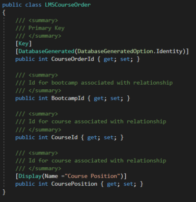
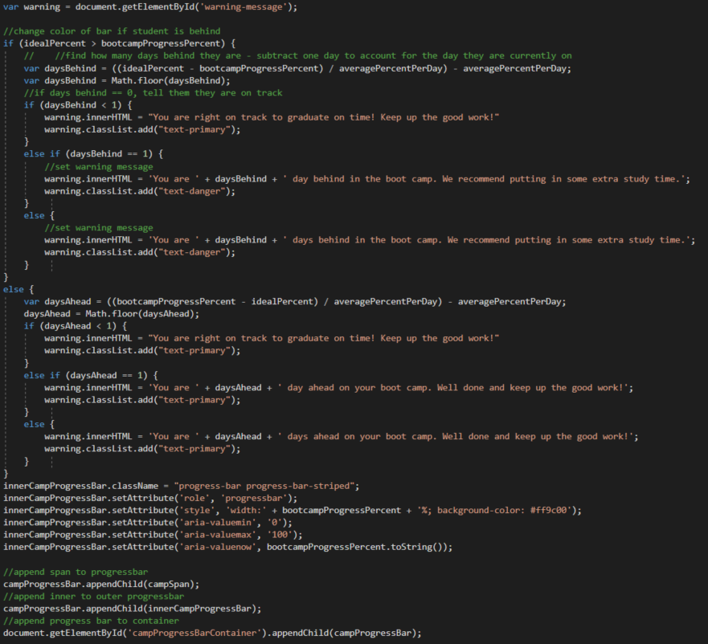
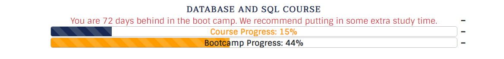
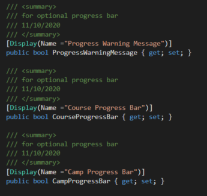
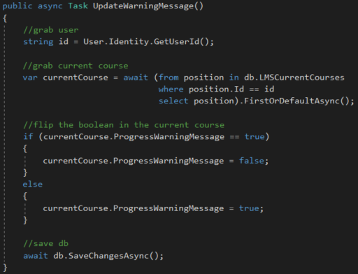
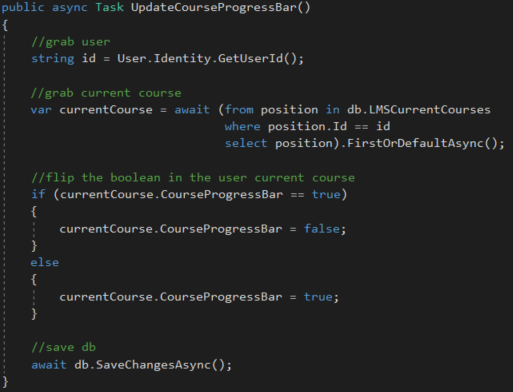
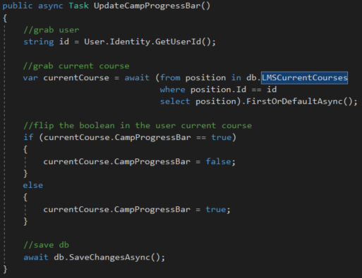
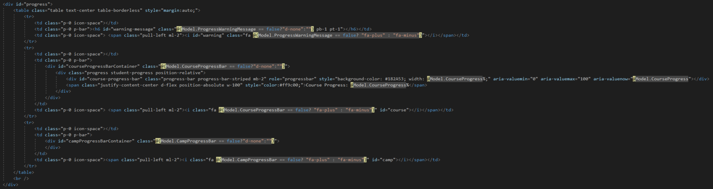
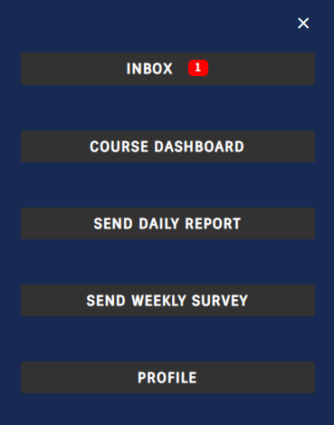
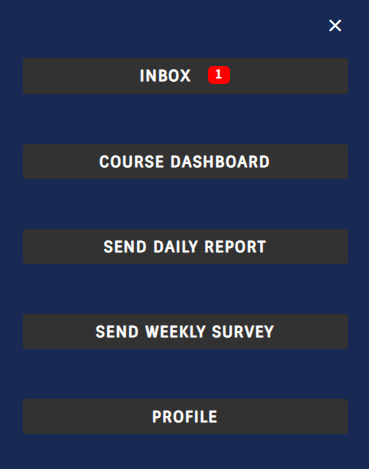

This is how I built the most accurate progress bar that the Tech Academy has ever used. When I was a student, the progress bar only counted the actual course material
which leaves between 2-4 weeks (depending on the particular bootcamp) for the mandatory live projects unaccounted for. The old model attempted to tell students how
many days ahead/behind they were and then the student had to mentally account for the amount of time missing from the calculation. I was tasked with preserving the
days ahead/behind while making the whole process more accurate. All of the courses at the Tech Academy are weighted by the days it takes on average to complete given an assumed
8 hour study day. The issue here is that our largest course page-wise, Computer and Technology Basics, contains over 800 pages - but only takes 3 days to complete because
it is not coding intensive. While C# and .Net Framework Course contains only 300 pages but takes about two weeks to complete because of the amount of small coding projects contained within.
To top it all off, not all boot camps contain the same classes or completion time (between 10-16 weeks full-time). I reorganized the way that bootcamps were stored in the dB. Since 1 course can exist
in some or all camps, I created the LMSCourseOrder table. This is just an object to link a course to a bootcamp. A boot camp itself is just the collection of courseOrders with that boot camp id.

To include the previously unincluded 2 week live projects, I created a live Project course containing only the instructions needed to access the team story boards (about 6 pages) and weighted it at 2 weeks.
Boot camps with multiple live projects could now reuse the same live project course in different course orders to accommodate the lengthier camps. Next, I had to find the course progress that the student had completed -
a simple matter of dividing the page number they were on by the total pages in the course and rounding that number to a percent. Here is my sweet method:

Since performing the Boot Camp progress and ahead/behind message would be very labor intensive for the program to calculate in teh back end, I decided to hand the issue over to JavaScript. When I built
the HTML, I only filled the Course Progress bar and left the warning message and camp progress containers empty to be filled as the page loads:

Then I included that course progress percentage in the View Model for this progress bar:

In order to calculate the boot camp progress as accurately as possible, I would need to find the amount of time it takes to complete the already-completed courses added to the days completed of the course
they are in the middle of (course days to complete * course progress) all divided by the total time it will take for the student to complete all courses. To calculate where the student should be, I would need to
grab the user start date and the weeks they purchased to compare it to the previously calculated Boot Camp progress. I did this by grabbing all those values and putting them into a string separated by commas like this:

The results of which have been put into a client-side cookie to be accessed by the JavaScript:

Then I wrote a gigantic JavaScript function - the first part of which accesses the cookie, finds the boot camp progress, and creates the boot camp progress bar HTML elements

In the second part, the function finds where the student should be given where the aforementioned boot camp progress percentage, and the purchased time that the student has to remain in the system to give them an accurate depiction
about whether they are on track, ahead, or behind in their studies and create HTML elements that reflect such.

The system finally has a supremely accurate progress bar that can handle different lengthed boot camps AND different amounts of purchased time. One final task remains. There had been complaints from students who had fallen behind
that the message telling them how far behind they were was stressing them out.

I was to give the user an option to display any combination of course progress, camp progress, and days ahead/behind. I did this by adding a boolean for each element
to be stored inside the user's current position object. This would give the person the ability to show the elements they want and allow those changes to be saved when a new page loads.

Then I created void methods for each progress bar component to toggle the boolean dB values at the click of a button:



And linked those methods to "+"/"-" icons next to the bar containers...

With Jquery onclick methods that activate ajax calls to the void controller toggling methods:

Now each user is able to choose which information they want displayed:


And now everyone is happy!


 
